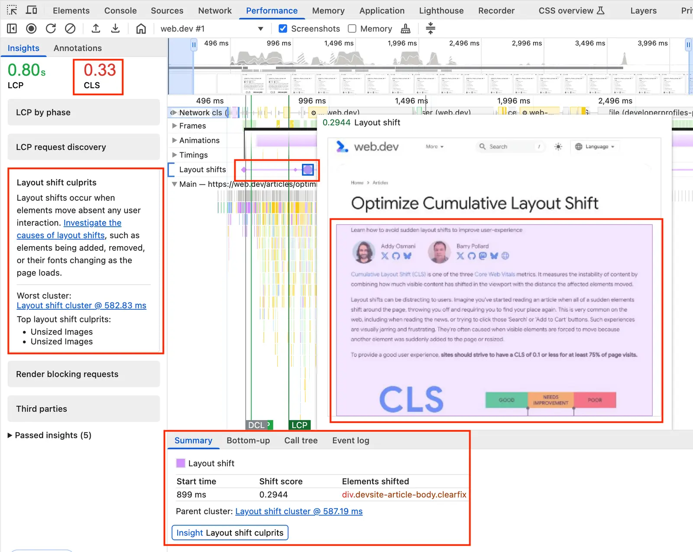

短答
布局偏移是已经可见的内容发生了意外移动。
B2B 模板上常见的原因是图片到达时没有预留盒子、网页字体改变了换行，以及标题上方被插入一条横幅。访客自己选择的点击，例如打开规格手风琴，和自己冒出来的组件不是同一类事件。
定义
性能面板可以把偏移记录和移动了的元素放在一起。这个视图是用来看见事件的。它不是对 Mika、某位客户或本营销站的测量。SEO 健康用它来点名模板缺陷。它不会把轨迹换成名次。
健康检查里怎么使用这个定义
保留一条样例 URL 和移动了的元素，不要把预期中的点击和插入的条当成同一种缺陷。
预留宽高或宽高比盒子，可以避免文件到达时主视觉把数据表链接往下推。替换字体可以限制在度量接近的后备字体上，或以不让标题重排的方式加载。同意或聊天区域如果必须在页面上，就需要一个稳定位置。修复是位置上的。改写产品形容词并不会让布局静止。

要检查什么
- 没有预留盒子的图片和 iframe
- 首次绘制后改变换行的字体
- 插到已经可见内容上方的条
- 移动是否发生在访客自己的点击之后
- 与元素名称一起保存的样例 URL
一个结构示例
管件页先画出名称，然后标签管理器插入一条促销条，“下载 CAD”链接跟着跳走。健康发现是这条的插入点。CAD 文件是否有用，是另一条轨道上的内容问题。在这条有位置之前，增加更多下载并不会停止跳动。
它不声称什么
停止意外移动不保证排名或引用。
Mika Visibility 把它归到哪里
Mika Visibility 把它归在 SEO 健康：线上站点在技术上是否准备好被发现和理解。SEO 增长仍是关于覆盖和意图的另一个问题。GEO 健康与 GEO 增长保持各自的尺度。一条加载或响应性记录不会自动变成增长分数，也没有混合总分。
这张图是偏移的调试记录，因此文章可以讨论原因，而不必给任何域名公布一个 CLS 数字。
常见问题
什么是布局偏移？
布局偏移是已经可见的内容发生了意外移动。
记录应该保留什么？
保留一条样例 URL 和移动了的元素，不要把预期中的点击和插入的条当成同一种缺陷。
稳定的布局能保证排名吗？
停止意外移动不保证排名或引用。
下一步
做一次结构化的 SEO + GEO 审计，查看健康发现、增长缺口和可以执行的蓝图。
更清晰的实体、答案、证据和上下文，会让页面更容易被理解与引用。任何回答产品中的结果都不作保证。